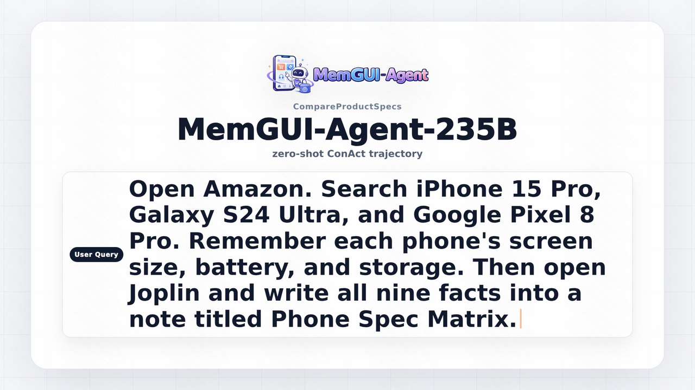
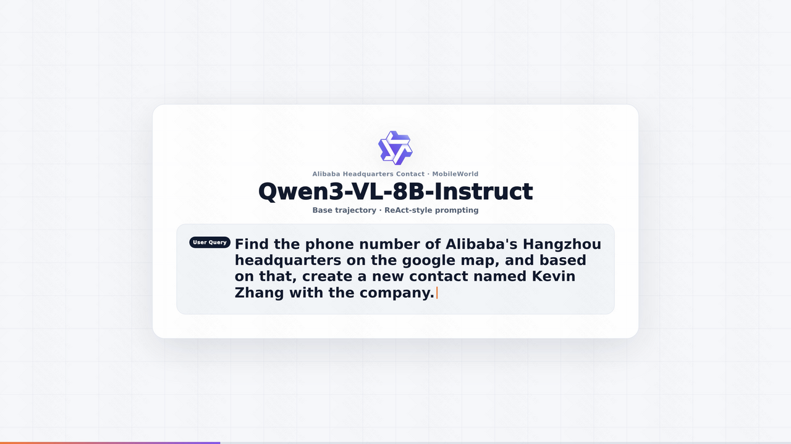
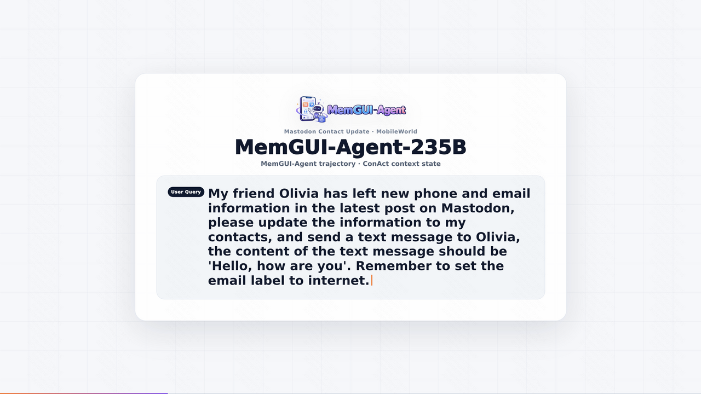
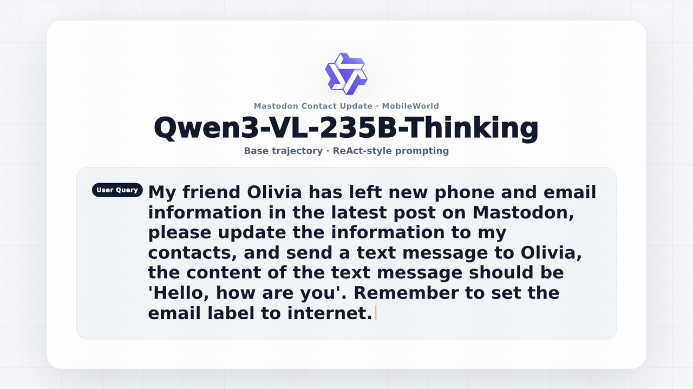
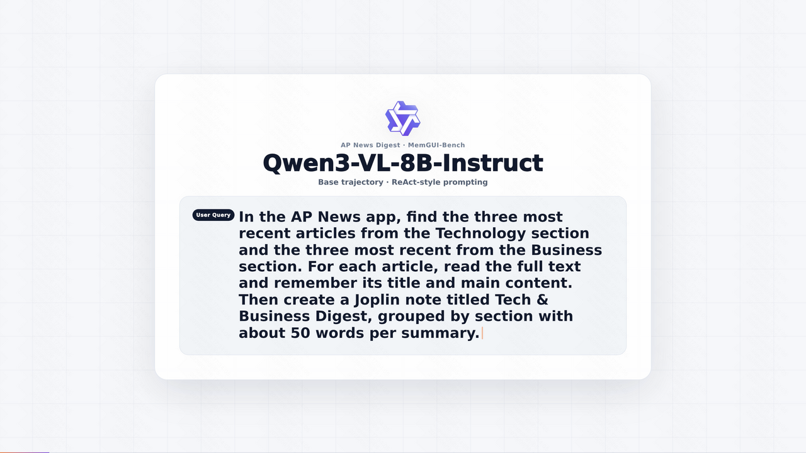

MemGUI-Bench
8B Base
ReAct-style Qwen3-VL-8B-Instruct trajectory.
MemGUI-Agent
1Zhejiang University 2Kuaishou Technology
MemGUI-Agent uses ConAct, a Context-as-Action interface that folds action history, updates UI memory, and emits the next GUI action in one structured response.
Project Video
Side-by-side and single-trajectory demos for the paper case studies.
Four side-by-side comparisons covering MemGUI-Bench and MobileWorld with 8B and 235B backbones.

ReAct-style Qwen3-VL-8B-Instruct trajectory.

MemGUI-8B-SFT trajectory on the same benchmark setting.

Qwen3-VL-235B-Thinking with ReAct-style prompting.

Zero-shot ConAct with unchanged Qwen3-VL-235B-Thinking weights.

Out-of-distribution mobile GUI task with the 8B baseline.

MemGUI-8B-SFT transfer behavior on MobileWorld GUI-Only.

Qwen3-VL-235B-Thinking baseline on MobileWorld.

Zero-shot ConAct transfer on MobileWorld GUI-Only.
01 / Main Results
MemGUI-Agent improves both zero-shot 235B and trained 8B settings on long-horizon mobile GUI benchmarks.

Benchmark Standings
Click a table to open the corresponding public trajectory viewer.
02 / Method
Instead of carrying an ever-growing raw transcript, MemGUI-Agent makes context updates explicit and executable inside each model response.

Compresses completed interaction spans while preserving task-relevant progress.
Stores persistent UI facts such as names, prices, values, and form state.
Keeps local interaction continuity for the next GUI action.
03 / Dataset and Case Study
MemGUI-3K supports SFT and offline analysis. The case study follows one long mobile workflow end to end.


04 / BibTeX
The arXiv link will be added after upload.
@article{memguiagent2026,
title = {MemGUI-Agent: An End-to-End Long-Horizon Mobile GUI Agent with Proactive Context Management},
year = {2026}
}